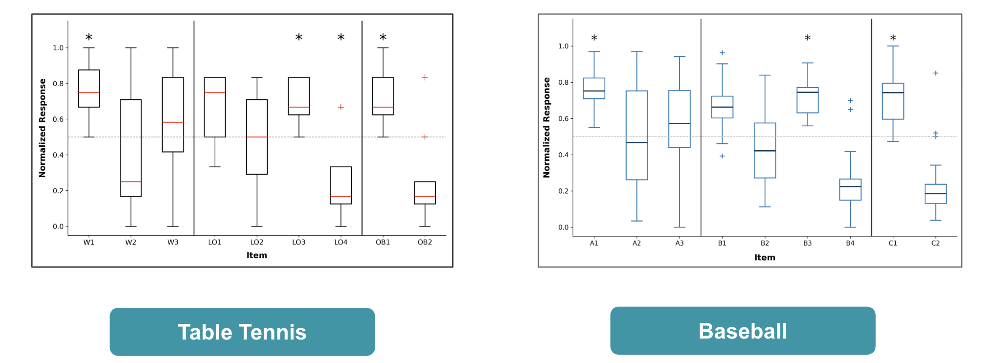
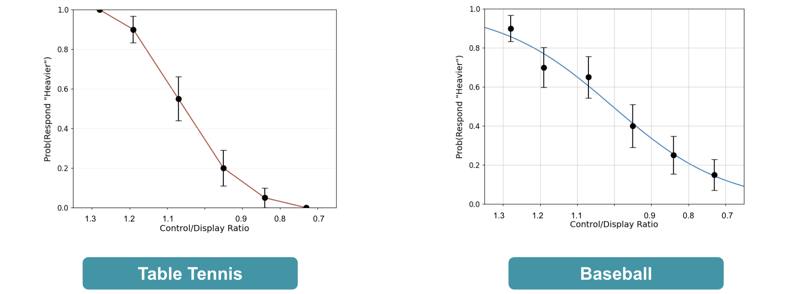

Project Overview
Rendering Baseball on Meta Quest 3
We developed a VR Baseball environment on the Meta Quest 3 to test the illusion of weight using different bat settings. The scene includes a virtual pitching machine, and the ball is pitched upon user request by pressing X on the controller. Below are the environment scenes and a demo video showing the gameplay using the lightest bat setting.
While developing the baseball simulation, we encountered several unique challenges:
- Orientation Mapping: Finding the correct orientation mapping between the physical environment controller and the virtual baseball bat was tricky. We added a 90-degree offset to ensure the virtual bat oriented naturally with the user's batting stance.
- Grip Location Adjustment: Every user required and felt a different ideal grip location. To accommodate this, we added a feature allowing users to dynamically adjust the grip location in the X and Y directions using the right-hand controller.
- Swing Speed Calculation: There was no automatic way to calculate the swing speed at the exact moment of impact. Because the kinematic plugin being checked causes the instantaneous velocity to register as 0 upon contact, we had to approximate the impact speed using the predicted motion trajectories of both the bat and the ball.
.png)
A baseball bat stand with 6 bats - all with different C / D ratios to test different perceptive weights.

pitching machine releases a parabolic trajectory ball

overall scene with brown terrain, nets, tress, sky ,etc for immersion.
demo video of playing baseall in virtual environment with C/D ratio = 0.7 lightest bat
Rendering Table tennis on Meta Quest 3
Table tennis VR game
When designing the table tennis part of our experiment, we modified code from a public ping pong repository. Here, we added options to control the C/D ratio of the table tennis racket.
In this fast-paced environment, a standard one-to-one mapping between the controller and the virtual paddle is no longer sufficient if we want to induce a convincing illusion of weight. Therefore, we needed a robust motion re-mapping strategy, which brings us to the geometric setup of our system. We introduce our Motion Re-mapping Strategy. Traditionally, VR systems track the absolute position—the X, Y, Z coordinates—of the controller. However, under standard linear scaling, applying a C/D ratio often causes the virtual object to drift or feel disconnected from the physical hand during rapid movements.
To solve this, we shifted our mapping strategy from absolute position to relative angular mapping. We define the user’s shoulder as the origin of a spherical coordinate system. We then track the arm vector and decompose the hand's motion into two components: Angle and Length. By keeping the arm length matching the physical world one-to-one, we only manipulate the angular displacement to achieve a more natural hand-to-paddle coordination."
Besides, A critical challenge we faced was the 'centerline acceleration phenom.' If we scale the motion around the user's front center, the paddle exhibits an unnatural 'magnetic acceleration' when crossing the centerline, leading to a sudden distortion in weight perception. Our solution, as shown in the next image, is the 'Right 90-degree' Anchor Logic. For a right-handed forehand stroke, the movement is inherently unidirectional—moving from the right side toward the front. Therefore, we redefined the 'Zero-Angle Basis' at 90 degrees to the user's right. At this precise anchor point, the angular delta is zero, meaning the physical hand and the virtual paddle are perfectly aligned without any offset. This effectively eliminates any position snapping or reverse acceleration.

Shoulder spherical coordinate system and the "Right 90" anchor logic
Finally, we apply Real-time Angular Scaling. Instead of standard vector interpolation, we use angular extrapolation by multiplying the measured angle 𝛳 by a coefficient, k, which represents our C/D ratio. This method is mathematically similar to rotation gains used in Redirected Walking. It ensures that the paddle smoothly leads or lags the hand with a constant geometric scaling factor throughout the entire swing, creating a seamless and consistent illusion of weight during intense sports-like actions.

Real-time Angular Scaling Setup Illustration
C/D Ratio Demonstration
User Study Design and Data Analysis
In order to conduct our user study, we broke it down into two sessions: free exploration and weight discrimination.
For the first session, we had the users freely play around with paddles of different weights for a few minutes (C/D ratio: 0.85 & 1.15). For this stage and the next, the paddles had the same mesh and texture to prevent any possible external influence on weight perception due to visuals. After the free exploration session, the users took a short break to fill out a likert-scale (from strongly disagree<1> to strongly agree<7>) questionnaire on how they perceived the weight. Here, we broke down the questionnaire into the following categories: perception of weight, limb ownership, and object believability.
In the second session, we carried out a weight discrimination test using A/B testing where the user was asked to distinguish the weight between two paddles of different C/D ratios. One of the paddles always had a standard ratio of 1, while the other had a varied ratio of either 0.7, 0.8, 0.9, 1.1, 1.2, or 1.3. Each of these 6 settings was tested 4 times, but we scrambled the order to prevent any noticeable pattern which the user could guess. Additionally, we counter-balanced which paddle was assigned a C/D ratio of 1 to ensure there was an equal proportion of trials where the user was given the fixed or varied ratio paddle first. After swinging the paddles, the user was asked which one they felt was heavier. The proportion of whether the user said the varied ratio was heavier was recorded. For detailed procedures and questionnaire design, please refer to this document.
To analyze the questionnaire, we mapped each likert-scale response from 0 to 1 (0 = strongly disagree, 0.5 = neutral, 1 = strongly agree). After aggregating the responses, they were then analyzed by using a Wilcoxon signed-rank test to test whether the median differed significantly from 0.5. The results are displayed in the box plot, where the asterisk indicates items that were found to be significantly different from 0.5. Out of our 9 questions, only 4 were found to be significantly different in the Table tennis game study. Here, users did perceive a weight difference, but there were no significant changes in exerting physical effort or perception of material. However, it seemed like the users still retained the feelings of limb ownership, and they also felt that the interaction with the paddles was natural.
For the weight discrimination test, the data was analyzed to reflect the proportion of trials for which the comparison stimulus was reported to be heavier than the standard 1.0 stimulus as a function of the C/D ratio of the comparison stimulus. Based on the resulting graph, the slope was negative and significantly greater than 0. It seems like users perceived higher CD ratios as heavier, while lower CD ratios were perceived as lighter.
We recruited 8 and 15 participants, respectively, for the VR table tennis game and baseball game user studies. The results of the data processing and visualization are shown in the figures below.

Responses to Questionnaire. Asterisks indicate median is significantly diferent from 0.5 according to the Wilcoxon signed-rank test, and plus signs represent outliers.

Psychometric function showing the probability of reporting that the comparison cube felt heavier than the standard cube (C/D ratio = 1) as a function of the C/D ratio. The plotted lines are the ftted psychometric function.
References
- Gomez, D., et al. (2023). Weight perception analysis using pseudo-haptic feedback based on physical work evaluation. Frontiers in Virtual Reality, 4, 1152014.
- Hirano, T., et al. (2024). Effect of Virtual Object Material on the Pseudo-Haptic Weight. IEEE Transactions on Visualization and Computer Graphics.
- Samad, M., Gatti, E., Hermes, A., Benko, H., & Parise, C. (2019). Pseudo-Haptic Weight: Changing the Perceived Weight of Virtual Objects By Manipulating Control-Display Ratio. Proceedings of the 2019 CHI Conference on Human Factors in Computing Systems, 1–13.